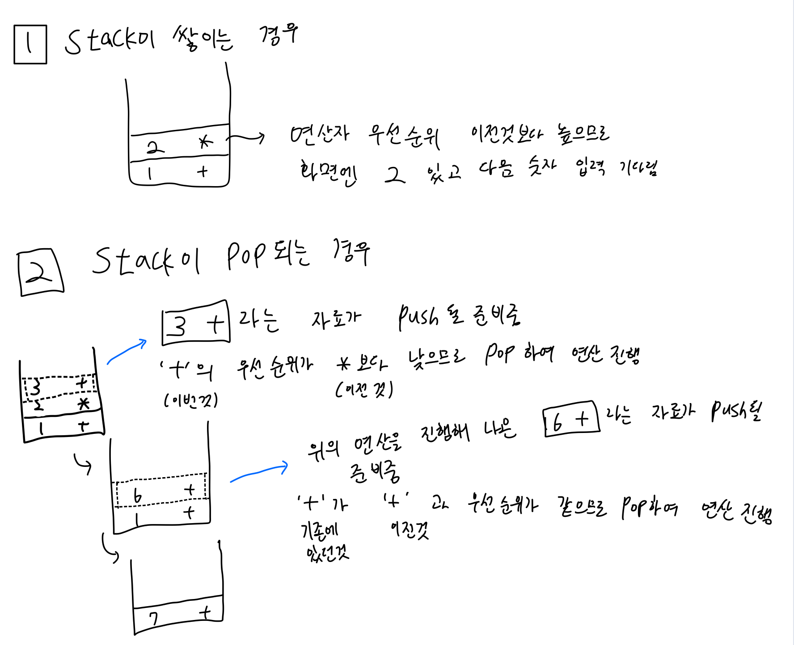

오늘 공부한 내용
붱이의 SOLID 원칙 강의를 들었습니다
SOLID관련 개념에 대해서는 추후 포스팅 예정입니다.
계산기 프로젝트 Step1 PR을 보냈습니다
-
2진수의 음수 표현을 위해 2의 보수로 변환하는 과정에 대해 고민했습니다
-
Double로 출력시 의미없는 소수점 뒷자리 (10.0 과 같이 0이 붙음) 를 출력하지 않을 방법을
NumberFormatterclass를 활용하여 해결했습니다 -
연산자의 우선순위에 대해 공부했습니다.
Swift 공식문서의 연산자 precedence값을 참고하여 코드에 반영했습니다.
-
계산기의 Stack을 활용하여 로직을 처리할 방안을 구상했습니다.

고민한 내용
상속과 프로토콜 언제 어떤걸 써야할까?
오늘 붱이의 SOLID강의를 들으며 가장 궁금했던 주제입니다.
대체 상속과 프로토콜은 어떻게 선택하여 사용하는걸까?
사실 프로토콜은 반드시 따라야하는 규약을 정해주는 것이고
상속은 부모 클래스의 것들을 가져다 쓸 수 있다는 점에서 근간부터가 다르지만
오늘 붱이가 보여준 예제는 분명 상속만으로도 충분히 기능적 해결이 가능했었습니다.
그럼에도 불구하고 프로토콜과 추가 Class를 이용하였는데 이것이 상속을 활용하는 것과 어떻게 다른지에 대해서 고민해보았습니다.
모든 프로젝트의 틀을 잡고 시작할 수 있을까?
이번 계산기 프로젝트를 진행하며 여러가지 난관에 부딪히고 있는데 그 중 하나가 바로
“모든 프로젝트의 완성품을 알고서 그것에 맞게 설계하는 것이 가능할까?” 였습니다.
만약 완성품의 모습을 알고 있더라 하더라도 그 완성품의 모습을 고려하여 처음부터 설계를 빡세게 할 수 있을까? 와 같은 고민을 하고 있던 찰나 mason의 조언을 받았습니다.
현업에서 완성품의 모습을 알고서 프로젝트를 진행하는 것을 사실상 불가하고 진행 중 리팩토링을 하는 경우가 많으니 다음 스텝을 예상하지 말고 코드를 짜보라는 조언이었습니다.
이 말의 뜻을 이해해보자면
다음 스텝을 고려하지 말고 바보같이 코드를 짜라
가 아니라
다음 스텝을 예상하지 않고 코드를 짰을때도 다음 스텝에서의 적용이 원활하도록 코드를 짜라
로 들렸습니다.
조언을 통해 프로젝트 진행방향의 갈피를 잡을 수 있었습니다.
내일 공부할 내용
- SOLID 원칙 공부
- Unit Test, TDD 예습
- 운영체제 3강 수강
- 네트워크 2강 수강